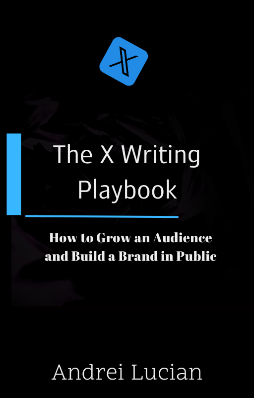

I help B2B founders get noticed & get leads with Personal Branding, Content Strategy & B2B Growth.
Social proof: 30+ clients · 8M+ views (swap for your numbers)

Before you chase reach, fix what people see when they click you: your profile. Photo, banner, and bio should answer in seconds: who is this, what do they stand for, and why follow.
Checklist:
Examples for photo and banner are on the next page.
a) Profile image — your face, clearly
b) Cover image — your offer / reason to follow
Quick rules
Build your headline and about section around:
Below is a filled example you can adapt — not a template to copy verbatim.
Map to the formula
Social proof answers “why believe you?” — keep it one line.
Writing on social is simple (not easy).
You only need two things.
Your writing has to look good and be useful.
You make it useful with the content goals:
You make it look good with aesthetic writing — easy to consume. It includes (but isn’t limited to):
There’s more I teach clients — this is the 20% that gets most of the result. Let’s go.
The rule of 3 improves rhythm. More clarity, more persuasive, more memorable. It’s usually stronger than one or two items — use 3s in lists when you can.
Example:
Don’t use more words when fewer will do. People are busy. Write like it.
Simplicity reads like confidence.
Example:
Stairways make your writing look organised. It’s underrated.
Order lines by length so the eye travels down cleanly.
Example:
Dare to make clear statements. You’ll get some pushback — and you’ll attract the right people. Stand for what you believe.
Example:
Repetition improves readability. Use the same opener on list lines to create rhythm.
✕ Many posts · Lots of tweets · A lot of writing
✓ Lots of posts · Lots of tweets · Lots of writing
Example:
Bullet points have lots of benefits.
Pick • over - when you can. Use more bullets in feed posts.
Example:
White space is incredibly important.
It lowers the perceived effort to read your post — so more people finish it. Add space after short lines.
Example:
You should write as you speak. Beginners try to sound smart — it backfires. If you wouldn’t say it out loud, don’t type it.
Vary sentence length. Short. Then a longer line that carries one clear idea — then short again. Monotone length feels like a textbook.
Example:
Inspirational posts are great for growth. Focus on empathy, milestones, transformation. It builds trust, growth, and likeability.
Inspirational content
Empathy
Milestone
Transformation
People want valuable information. Great educational posts maximise value per second. Focus on proof, insights, strategies. It increases trust and authority.
Educational content
Proof
Niche insights
Strategies
A lot of people just want to be entertained. You don’t need to become a comedian — just a bit more human. Focus on jokes, anecdotes, polarizing takes. It increases likeability and memorability.
Entertainment content
Polarizing takes
Jokes
Anecdotes
Batch hooks on Sunday. Ship 3–5 posts per week. Protect one engagement block daily.
| Day | Content | Engage | DMs |
|---|---|---|---|
| Mon | Draft / schedule 2 posts; pick templates | 60 min (split: yours + niche feed) | 5–10 thoughtful |
| Tue | Publish + one comment capture / story | 60 min | 5–10 |
| Wed | How-to or framework post | 60 min | 5–10 |
| Thu | Proof or opinion | 60 min | 5–10 |
| Fri | Review saves / replies; steal your own format | 45 min | Optional |
| Sat–Sun | Batch next week’s hooks; optional carousel | Light / off | Off |
Adjust to your bandwidth — keep the structure, not every number.
Rotate formats so you never run out of ideas. Pillar mix: proof, opinion, how-to. Every post should make one idea stick.
Templates 1–5
Templates 6–10
Cadence: e.g. Mon opinion · Wed how-to · Fri story — tune to you.
Micro-example
60 minutes per day — budget this for real interaction (not doom-scrolling).
A) Reply to people who engage on your posts. Don’t answer with one word like “yes”, “ye”, or “indeed” — use at least one full sentence, and add a question or next step when it fits.
B) Leave 30–100 comments per day on other people’s posts (pick a realistic range). Insight, not links — comments are borrowed distribution.
Examples (feed-style lines you might comment under)
“Your network is your net worth.”
Most people lead with taking. Flip it: curiosity → value → optional call. Target 20–30 real DMs per day only to people you’d actually talk to.
Mindset
Avoid “let’s connect” with no context, needy tone, “hi” with no hook, hollow reciprocity, giant voice notes.
Steps 1–3 — Find people through comments; follow + warm up; first message = why their post/bio hit (short).
Inspiration, not 30 copy-pastes.
Steps 4–5 — Ask about what they’re building; offer a useful note or intro when it’s real (not manipulation).
Steps 6–7 — Short call if values align; move great fits to Telegram / email. Skip hollow pods.
Small vs big creators: bigger inboxes need a sharper reason to reply. Lead with value; stay non-needy; treat them as peers, not idols.
Weekly rhythm
Signals you’re winning: strangers cite your themes; DMs get specific; you can predict saves vs comments.
Today
Ghostwriting — for B2B founders who want a repeatable system: positioning, hooks, and cadence — not guesswork.
Brand advising — for small creators who want to grow on X, build an audience, and monetize — from 0 → 1000 followers in the next 120 days.
The X Writing Playbook · export via Print → Save as PDF.